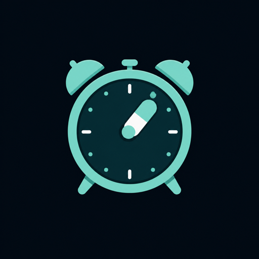
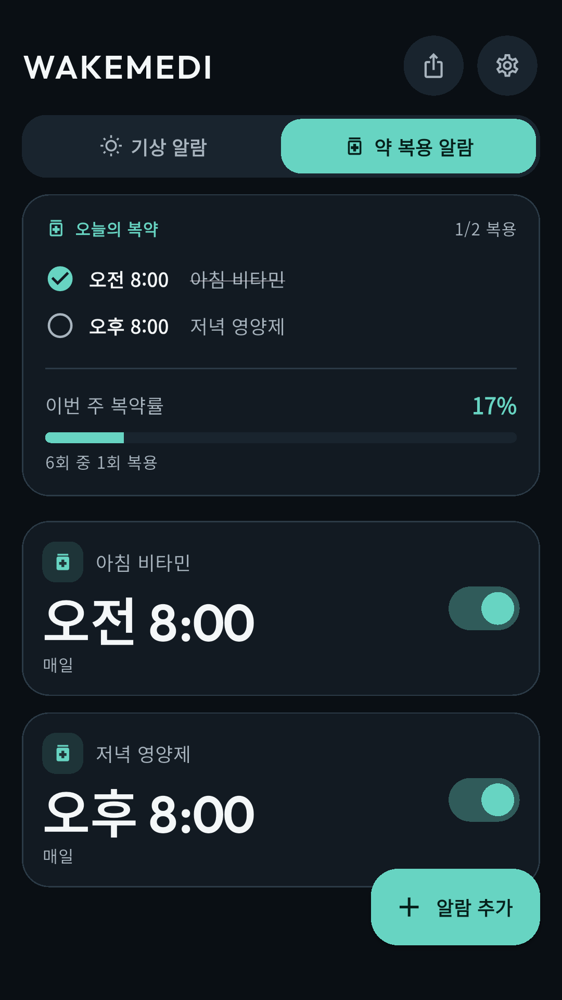

WakeMedi
스마트 기상 & 복약 루틴 관리
반복되는 일반 알람은 무의식중에 끄기 쉽습니다. WakeMedi는 실제 전화가 걸려온 듯한 전체 화면 인터페이스와 직관적인 복약 기록으로 아침 기상과 건강 루틴을 확실하게 지켜줍니다.

Core features
꼭 필요한 기능에 집중한
세심한 설계
복잡한 기능 대신, 매일 아침 눈을 뜨고 정해진 시간에 약을 챙겨 먹는 기본에 가장 충실합니다.
전화 수신형 풀스크린 모닝콜
단순히 밀어서 끄는 알람 대신, 실제 전화가 온 듯한 전체 화면 인터페이스와 발신자 프로필, 통화 수신 제스처로 잠결의 무의식적 알람 해제를 방지합니다.
내 목소리 & 가족 보이스 알람
날카로운 전자 벨소리 대신, 본인이 직접 녹음한 다짐이나 소중한 가족·연인의 목소리를 전화 벨소리처럼 재생하여 편안하고 기분 좋게 기상합니다.
정밀 복약 스케줄러 & 순응도 통계
식전/식후, 시간대별 복용 스케줄을 세분화하여 등록하고, 원터치 복약 체크 및 주간 복약 달성률(Adherence Rate) 통계로 건강 습관을 관리합니다.
QR & 딥링크 원클릭 알람 공유
반복 요일, 복약 일정, 커스텀 보이스 설정이 포함된 알람을 QR 코드나 전용 딥링크 URL로 만들어 부모님, 자녀, 룸메이트에게 간편하게 전송할 수 있습니다.
100% 정시 알람 신뢰성 엔진
안드로이드 Doze 모드 및 절전 정책 환경에서도 알람이 지연되거나 누락되지 않도록 Exact Alarm 및 배터리 최적화 자가진단 파이프라인을 갖췄습니다.
서버 없는 로컬 SQLite 저장소
기상 기록과 복약 내역 등 민감한 개인 건강 데이터는 오직 기기 내부(SQLite)에만 저장되며, 회원가입 없이 즉시 가볍고 쾌적하게 구동됩니다.
Specifications
앱 사양 및 정보
| 앱 이름 | WakeMedi (웨이크메디 - 스마트 기상 & 복약 루틴 관리) |
|---|---|
| 출시 지역 | 글로벌 (전 세계 Google Play 스토어 서비스 중) |
| 가격 | 100% 무료 (Free) · 유료 결제나 인앱결제 없이 모든 모닝콜 및 복약 관리 기능 무료 제공 |
| 개발사 | 79's Labs (친구들랩스) |
| 지원 플랫폼 | Android 8.0 (Oreo, API 26) 이상 |
| 핵심 알람 기술 | 전화 수신 시뮬레이션(Fake Call Full-Screen Intent), 커스텀 보이스 오디오 재생 엔진 |
| 복약 관리 기능 | 식전/식후 시간별 스케줄러, 일일 복약 체크, 주간 복약 달성률(Adherence) 통계 |
| 공유 및 연동 | QR 코드 스캔 기반 알람 복제, 딥링크(Deep Link) 스케줄 공유 |
| 데이터 보관 방식 | 100% On-Device 로컬 SQLite DB (서버 전송 없음, 회원가입 불필요) |
FAQ
자주 묻는 질문
스마트폰이 무음 모드여도 알람이 울리나요?
네, 시스템 알람 채널 권한을 통해 기기가 무음이거나 방해금지 모드여도 정해진 볼륨으로 확실하게 알람이 울립니다.
회원가입이나 로그인이 필요한가요?
아닙니다. 계정 생성 없이 앱을 설치하자마자 바로 모든 기능을 사용할 수 있으며, 개인정보를 수집하지 않습니다.
복약 기록 데이터를 다른 기기로 옮길 수 있나요?
백업 및 복원 기능을 통해 기기 내 파일로 내보내어 새 기기에서 안전하게 불러올 수 있습니다.
배터리 최적화 설정이 필요한가요?
안드로이드 OS의 백그라운드 절전 정책으로 인해 알람이 지연되지 않도록, 최초 실행 시 배터리 최적화 제외 안내를 제공합니다.